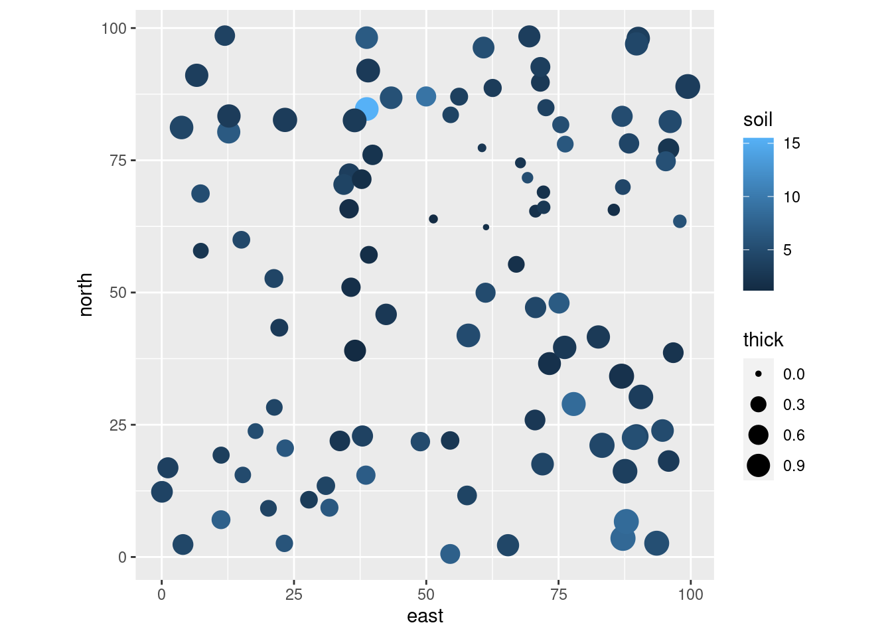
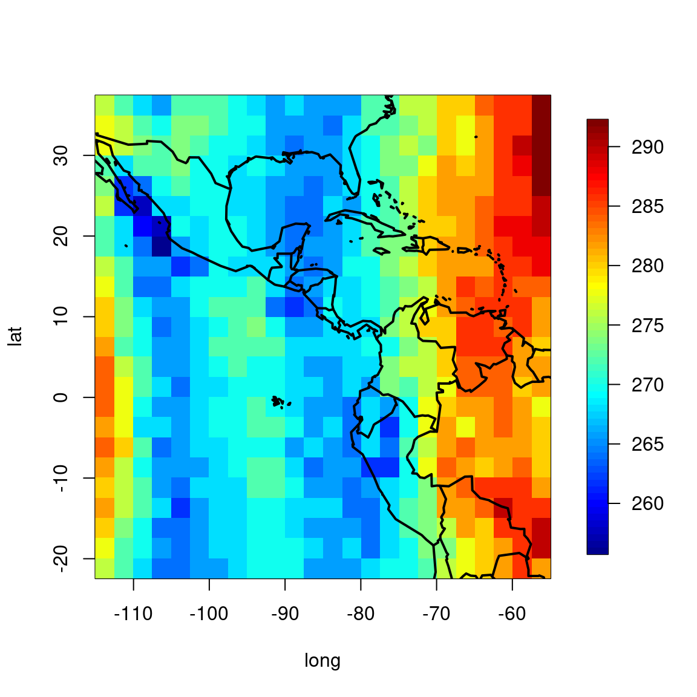

11 Spatial correlations
11.1 Recalling generalized least squares
Last lecture we talked about modeling correlations in the residuals of a linear model:
\[Y_i = \beta X_{ij} + \epsilon_{ij}\] where \[\epsilon \sim {\cal N}(0, \Sigma)\] and \(\Sigma\) is the variance-covariance matrix
Remember that for AR(1):
\[ \text{Cor}(\epsilon_t, \epsilon_{t-h}) = \phi^h \]
So the residual variance-covariance for an AR(1) is just: \[\Sigma = \sigma^2 \begin{bmatrix} 1 & \phi & \phi^2 & \phi^3 & ... & \phi^{n-1} \\ \phi & 1 & \phi & \phi^2 & ... & \phi^{n-2} \\ \phi^2 & \phi & 1 & \phi & ... & \phi^{n-3} \\ \phi^3 & \phi^2 & \phi & 1 & & \vdots \\ \vdots & \vdots & \vdots & & \ddots & \vdots\\ \phi^{n-1} & \phi^{n-2} & \phi^{n-3} & ... & ...& 1 \end{bmatrix}\]
\(\Sigma\) is estimated with two parameters, \(\phi\) and \(\sigma^2\)
11.2 Spatial autocorrelation
The Gaussian (most commonly modeled) spatial correlation structure quantifies the correlation between (the residuals) of two points, assuming that it onnly depends on their distance:
\[\text{Cor}(\epsilon_{i,j}, \epsilon_{i,j}) = \exp \left(- \left({r_{i,j} \over \lambda}\right)^2\right) \] Where \(r_{ij} = ||{x_i,y_i}|| - ||{x_j,y_j}||\), i.e. the distance between the two points, and \(\lambda\) is a single parameter that quantifies the scale of spatial correlation. Note that:
- at \(r = 0\), the correlation is 1
- as \(r \to \infty\), the correlation goes to 0
- at \(r = \lambda\), the correlation is \(1/e\)
The last fact is a useful way to interpret \(\lambda\) … as long as points are within distance \(\lambda\) of each other, they will be affecting each importantly.
As with serial autocorrelation (in time), the biggest risk of not accounting for spatial correlations is that you might detect spurious results, i.e. p-values will be artificially too low.
11.2.1 Example: Soil Quality Data
The gls and nlme functions in R can fit this (and a few other) spatial correlation structures in a linear modeling framework. As an example, here is one I found online which measures soil thickness as a function of quality at different locations
spdata <- read.csv("https://terpconnect.umd.edu/~egurarie/teaching/Biol709/data/soildata.csv") east north thick soil
1 70.66202 47.164981 0.70810547 4.512566
2 60.53693 77.351026 0.01785133 2.519441
3 87.18226 3.530827 1.11171322 8.133484
4 83.21457 21.109702 1.11715551 4.535713
5 75.42334 81.719902 0.36837944 5.274376
6 89.70406 22.805068 1.03328925 4.590200
11.2.2 Linear model
A straightworward linear model suggests that quality (which is measured at the surface) is a significant predictor of thickness (which is harder to measure):
Estimate Std. Error t value Pr(>|t|)
(Intercept) 0.47128554 0.06475729 7.277722 8.512716e-11
soil 0.03572402 0.01385732 2.577989 1.142602e-02The syntax to perform this fit is identical using gls, which by default fits a simple linear model:
summary(soil.gls)$coef numDF F-value p-value
(Intercept) 0.47128554 1 483.045263 1.170154e-39
soil 0.03572402 1 6.646029 1.142602e-02The coefficients (and p-values) are equal.
11.2.3 Adding Spatial Correlation
Is done as follows:
Generalized least squares fit by REML
Model: thick ~ soil
Data: spdata
AIC BIC logLik
-324.0889 -313.7491 166.0445
Correlation Structure: Gaussian spatial correlation
Formula: ~east + north
Parameter estimate(s):
range
19.87501
Coefficients:
Value Std.Error t-value p-value
(Intercept) 0.6409182 0.07577206 8.458503 0.0000
soil -0.0000164 0.00006041 -0.271173 0.7868
Correlation:
(Intr)
soil -0.039
Standardized residuals:
Min Q1 Med Q3 Max
-2.2258705 -0.7983252 -0.0246707 0.8023949 1.6542756
Residual standard error: 0.2879276
Degrees of freedom: 100 total; 98 residualNote the syntax
corGaus(1, ~east+west)Read about how this works in the ?corGauss help file and see a list of other correlation structures in nlme in the ?corClasses help file
11.2.4 Same Model with lme
The lme syntax is nearly identical. But: - because because it is a more general (and powerful) function, it is a bit more sluggish. - because it is designed for mixed effects models, it DEMANDS a “random effect”, which in this case is th column of dummy 1’s
require(plyr)
soil.lme <- lme(fixed = thick ~ soil, data = mutate(spdata, dummy = 1),
correlation = corGaus(1,~east + north),
random = ~ 1 | dummy, method = "ML")
summary(soil.lme)Linear mixed-effects model fit by maximum likelihood
Data: mutate(spdata, dummy = 1)
AIC BIC logLik
-343.0238 -329.998 176.5119
Random effects:
Formula: ~1 | dummy
(Intercept) Residual
StdDev: 9.483508e-06 0.2852258
Correlation Structure: Gaussian spatial correlation
Formula: ~east + north | dummy
Parameter estimate(s):
range
19.87889
Fixed effects: thick ~ soil
Value Std.Error DF t-value p-value
(Intercept) 0.6409115 0.07583082 98 8.451860 0.0000
soil -0.0000163 0.00006036 98 -0.270433 0.7874
Correlation:
(Intr)
soil -0.039
Standardized Within-Group Residuals:
Min Q1 Med Q3 Max
-2.24693166 -0.80586459 -0.02488149 0.81001846 1.66996822
Number of Observations: 100
Number of Groups: 1 But the conclusions are the same.
11.2.5 Challenges
- Auto-correlation structures are most easily defined for Gaussian models.
- For glm’s it is much more difficult to separate a modeled term from a residual term
- In general, these models can take a long time to fit - because inverting large matrices
- Combining both temporal and spatial autocorrelation is very difficult / not possible in these frameworks
- Bayesian MCMC can fit anything … but can take a long time to run.
- Probably the biggest, most powerful “gun” in the generalized / correlated / nested / mixed / additive modeling universe is: INLA (see: http://www.r-inla.org/) (integrated nested Laplace approximations).
11.3 Exercise: Ozone
Load the Ozone data in the plyr package This is a 24x24x72 numeric array which contains monthly ozone averages on a coarse (24 x 24 grid) covering Central America, from Jan 1995 to Dec 2000. Below, for example, is a plot of ozone concentrations on August 1995:
require(plyr); require(maps); require(fields)
O3 <- plyr::ozone
lat <- as.numeric(row.names(O3[,,1]))
long <- as.numeric(colnames(O3[,,1]))
image.plot(long,lat,O3[,,8])
map("world", add=TRUE, lwd=2, fill=FALSE)
Note that these data can be easily “reshaped” to a more classic data frame using the melt() function in reshape2:
lat long time value
1 -21.2 -113.8 1 260
2 -18.7 -113.8 1 258
3 -16.2 -113.8 1 258
4 -13.7 -113.8 1 254
5 -11.2 -113.8 1 252
6 -8.7 -113.8 1 252To add the “correct” month and year to this data frame:
An important additional tweak - we don’t actually want to do spatial analysis in latitude/longitude. We need to convert to a consistent unit (e.g. in km). This is a fairly large area, and the distortion of the earth might distort any projection, but this seems like a good one: https://epsg.io/5367. We use our spatial data skills for earlier chapters:
require(sf); require(magrittr)
O3.sf <- st_as_sf(O3.df, coords = c("long","lat")) %>% st_set_crs(4326) %>%
st_transform(5367)
xy <- st_coordinates(O3.sf)
O3.df <- data.frame(O3.df, xy)For the analysis below, pick any month and year combination.
Map the ozone concentration for that month/year combination.
Perform a straightforward linear regression of ozone concentrations against East and North. Does there appear to be a East-West or North-South trend in either of those directions?
Estimate the spatial scale of autocorrelation in ozone concentrations.
Does taking that correlation into account change your conclusions about longitudinal or latitudinal trends in ozone concentration?
Bonus Problem: Write a function that performs this analysis for any year month combination. Perform it across all months. Are there any consistent annual patterns in (a) spatial scale of correlation and (b) longitudinal and latitudinal trends in ozone?